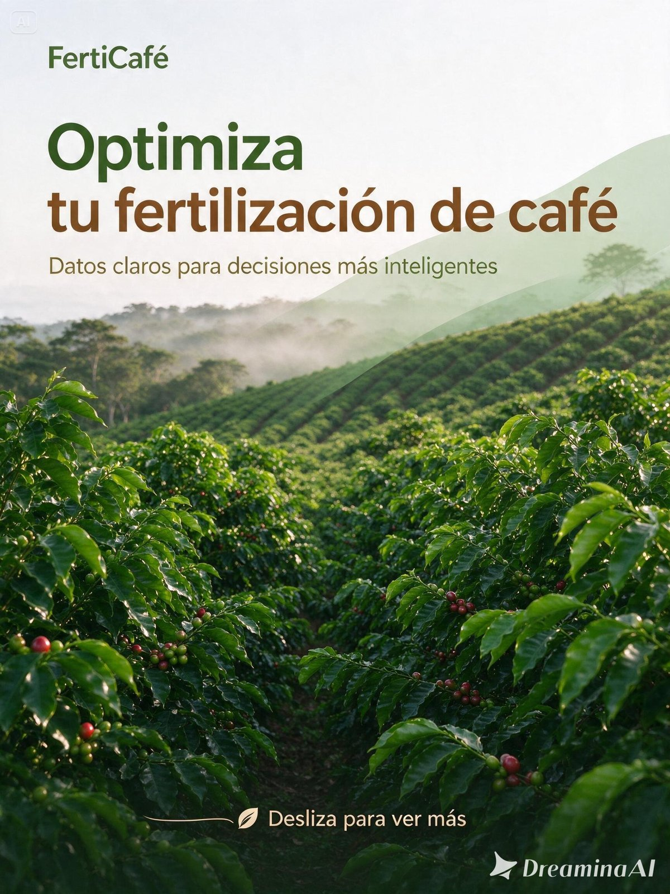

Seis láminas verticales 4:5.

2/6Cerca del 1 % de los caficultores que conocemos hace análisis de suelo con regularidad.
Estimación del grupo
3/6¿Cuánto comprar? FertiCafé calcula gramos por planta y bultos de 50 kg.
Dosis y compra
4/6¿Cuál abono? Compara grados compuestos y muestra el más barato.
Comparador
5/6¿Cuándo fertilizar? Calendario con recordatorios para cada lote.
Calendario
6/6Escríbenos por WhatsApp y calcula el abono de tu lote.
FertiCafé
Desliza para ver las 6 láminas.
FertiCafé te dice cuánto y qué fertilizante aplicar, sin análisis de suelo.
Calcula la dosis recomendada en gramos por planta, los bultos de 50 kg y cuál grado compuesto sale más barato.
También te da un calendario con recordatorios para cada lote.
Escríbenos por WhatsApp y pruébalo en tu finca.
#FertiCafé #CaféDeNariño #Fertilización #Caficultura #SanLorenzoNariño